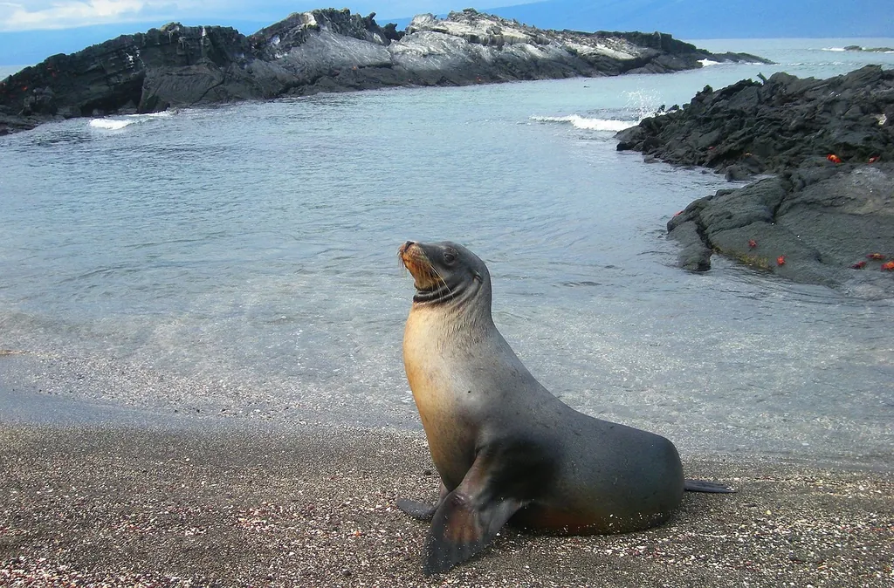
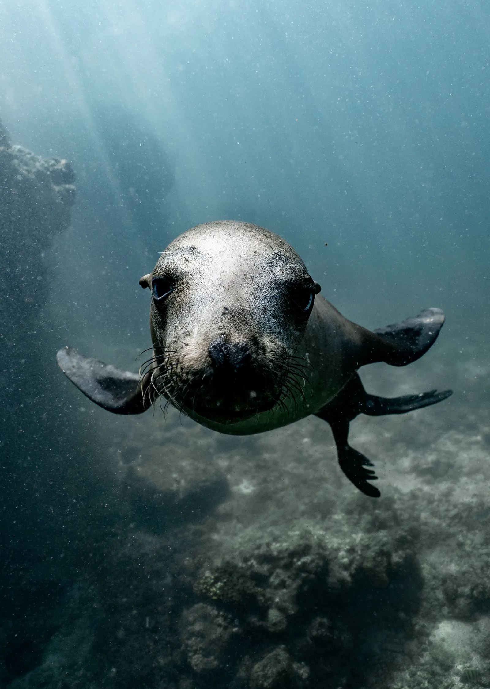
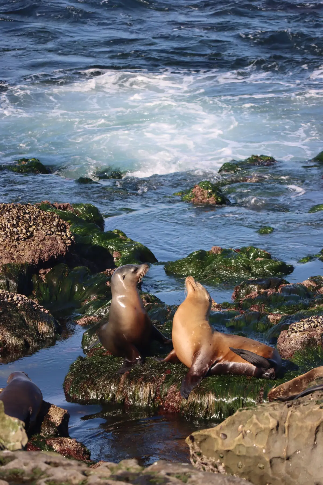

Built for a particular place and way of living.
Sea lions are eared seals adapted for an amphibious life, moving efficiently underwater while using shorelines and islands to rest, breed and raise young. Species differ considerably in population trend and conservation status.
Range. Coasts and islands in the Pacific Ocean and parts of the Southern Hemisphere, depending on species.
Habitat. Rocky coasts, beaches, islands, productive continental shelves and open coastal waters.
Natural history
Food and feeding. Fish and squid, with prey changing by location, season and species.
Reproduction and life history. Most species breed in colonies on shore. Females alternate between nursing pups and foraging at sea.
Conservation priorities depend on the species’ biology, habitat, range and rate of reproduction. These factors shape how quickly a population can recover and which pressures require the most attention.



What role does it play?
Sea lions are mobile marine predators that connect nearshore colonies to offshore food webs and can reveal changes in prey availability.
Ecological roles are rarely isolated. Predators depend on prey, grazers depend on productive vegetation, marine species depend on currents and nursery habitats, and forest species may depend on canopy connections that extend beyond protected area boundaries. Protecting a species often becomes a question about the wider system that keeps its life cycle possible.
Pressure and practical action
Threats vary between populations and places, so the list below is a guide to the major pressures associated with this species or group rather than a claim that every population faces every threat equally.
Key pressures
- Entanglement and ingestion of fishing debris
- Changes in prey availability
- Disease and harmful algal blooms
- Disturbance at breeding and resting sites
What helps
- Reduce marine debris and entanglement
- Protect breeding colonies from excessive disturbance
- Manage fisheries with ecosystem needs in mind
- Track disease and unusual mortality events
Sri Lanka context
Sea lions are not native to Sri Lanka. Sri Lanka’s comparable marine mammal conservation issues are more closely tied to cetaceans such as whales and dolphins.
Where CuteFela discusses a species in Sri Lanka, the local context stays specific by considering the habitat involved, whether the species is native, how people and wildlife share space, and which conservation tools are relevant. For species that do not occur on the island, the guide says so directly.
Start with specialist sources.
Conservation assessments are periodically updated. Use the linked specialist and institutional sources for the latest status, range and management information.
NOAA Fisheries Seals & sea lions ↗IUCN Red List ↗